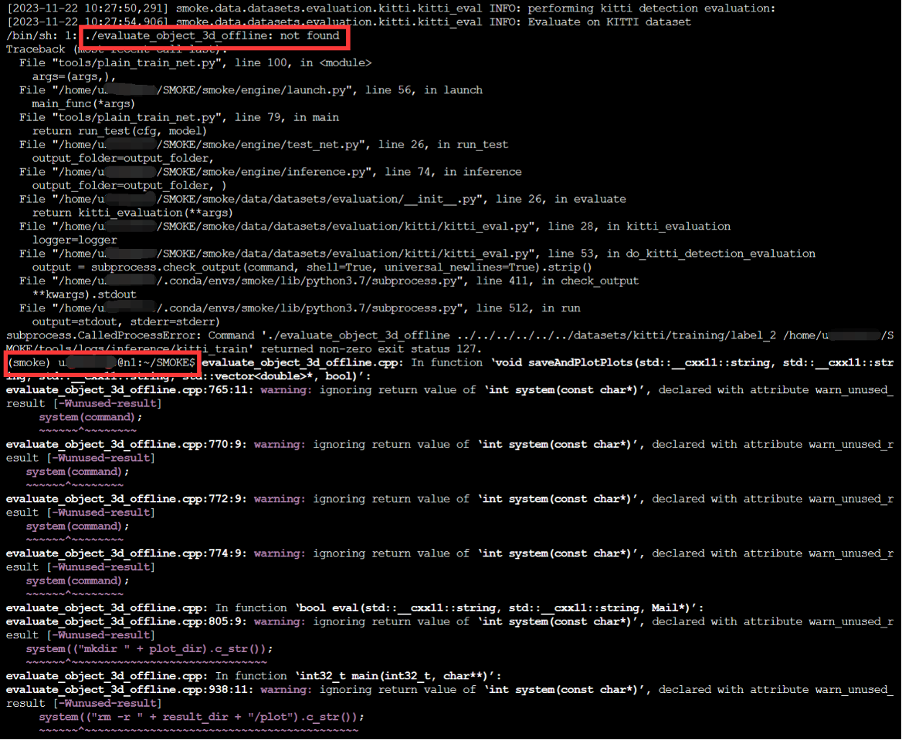

三、实验步骤
本文档介绍如何训练和导出SMOKE目标检测模型。熟悉SMOKE训练的部署和运行过程，最后可以使用训练好的模型在现实的自动驾驶数据集上进行目标检测结果生成，并利用相关的可视化工具进行结果可视化，判断模型表现好坏。
步骤一 环境准备
1. 创建独占实例
GPU集群的服务地址为http://hpc.hitsz.edu.cn。在校内可通过Chrome、Firefox浏览器直接访问，校外请使用VPN。 请需要使用的师生登录平台，使用统一认证方式登录，首次登陆需要填写信息激活账号。
登录方式
校内师生
点击“通过统一认证服务”，在统一认证平台输入用户名和密码，点击“登录”进入服务平台。
重置密码
重置密码时请确认选择足够强度的密码，并保证密码安全
申请资源
点击页面上方的“申请资源”，进入资源库。
2. 配置python环境
添加conda镜像源：
conda config --add channels https://mirrors.tuna.tsinghua.edu.cn/anaconda/pkgs/main
conda config --add channels https://mirrors.tuna.tsinghua.edu.cn/anaconda/pkgs/free
conda config --add channels https://mirrors.tuna.tsinghua.edu.cn/anaconda/pkgs/r
conda config --add channels https://mirrors.tuna.tsinghua.edu.cn/anaconda/pkgs/pro
conda config --add channels https://mirrors.tuna.tsinghua.edu.cn/anaconda/pkgs/msys2
#显示下载路径
conda config --set show_channel_urls yes
conda create --name smoke python=3.7.11
启动虚拟环境
conda activate smoke
退出虚拟环境
conda deactivate
#nvcc -V cuda=11.2
conda install pytorch==1.7.1 torchvision==0.8.2 torchaudio==0.7.2 cudatoolkit=11.0 -c pytorch
#success:True
python -c "import torch; print(torch.cuda.is_available())"
3. 运行深度学习代码
安装完实验环境，我们将手把手带你训练一个图像分类器。推荐使用vscode 配置的jupyter notebook, 可保持配置环境一致。也可使用学校提供的jupyter noetebook，此处我们使用用户界面提供的python3。
a.导入必要的包
import torch
import torchvision
import torchvision.transforms as transforms
transform = transforms.Compose(
[transforms.ToTensor(),
transforms.Normalize((0.5, 0.5, 0.5), (0.5, 0.5, 0.5))])
batch_size = 4
trainset = torchvision.datasets.CIFAR10(root='./data', train=True,
download=True, transform=transform)
trainloader = torch.utils.data.DataLoader(trainset, batch_size=batch_size,
shuffle=True, num_workers=2)
testset = torchvision.datasets.CIFAR10(root='./data', train=False,
download=True, transform=transform)
testloader = torch.utils.data.DataLoader(testset, batch_size=batch_size,
shuffle=False, num_workers=2)
classes = ('plane', 'car', 'bird', 'cat',
'deer', 'dog', 'frog', 'horse', 'ship', 'truck')
import matplotlib.pyplot as plt
import numpy as np
# functions to show an image
def imshow(img):
img = img / 2 + 0.5 # unnormalize
npimg = img.numpy()
plt.imshow(np.transpose(npimg, (1, 2, 0)))
plt.show()
# get some random training images
dataiter = iter(trainloader)
images, labels = next(dataiter)
# show images
imshow(torchvision.utils.make_grid(images))
# print labels
print(' '.join(f'{classes[labels[j]]:5s}' for j in range(batch_size)))
import torch.nn as nn
import torch.nn.functional as F
class Net(nn.Module):
def __init__(self):
super().__init__()
self.conv1 = nn.Conv2d(3, 6, 5)
self.pool = nn.MaxPool2d(2, 2)
self.conv2 = nn.Conv2d(6, 16, 5)
self.fc1 = nn.Linear(16 * 5 * 5, 120)
self.fc2 = nn.Linear(120, 84)
self.fc3 = nn.Linear(84, 10)
def forward(self, x):
x = self.pool(F.relu(self.conv1(x)))
x = self.pool(F.relu(self.conv2(x)))
x = torch.flatten(x, 1) # flatten all dimensions except batch
x = F.relu(self.fc1(x))
x = F.relu(self.fc2(x))
x = self.fc3(x)
return x
device = torch.device('cuda:0' if torch.cuda.is_available() else 'cpu')
# 使用GPU训练
net = Net().to(device)
import torch.optim as optim
criterion = nn.CrossEntropyLoss()
optimizer = optim.SGD(net.parameters(), lr=0.001, momentum=0.9)
for epoch in range(2): # loop over the dataset multiple times
running_loss = 0.0
for i, data in enumerate(trainloader, 0):
# get the inputs; data is a list of [inputs, labels]
inputs, labels = data[0].to(device), data[1].to(device)
# zero the parameter gradients
optimizer.zero_grad()
# forward + backward + optimize
outputs = net(inputs)
loss = criterion(outputs, labels)
loss.backward()
optimizer.step()
# print statistics
running_loss += loss.item()
if i % 2000 == 1999: # print every 2000 mini-batches
print(f'[{epoch + 1}, {i + 1:5d}] loss: {running_loss / 2000:.3f}')
running_loss = 0.0
print('Finished Training')
PATH = './cifar_net.pth'
torch.save(net.state_dict(), PATH)
查看测试集
dataiter = iter(testloader)
images, labels = next(dataiter)
imshow(torchvision.utils.make_grid(images))
print('GroundTruth: ', ' '.join(f'{classes[labels[j]]:5s}' for j in range(4)))
net = Net()
net.load_state_dict(torch.load(PATH))
outputs = net(images)
_, predicted = torch.max(outputs, 1)
print('Predicted: ', ' '.join(f'{classes[predicted[j]]:5s}'
for j in range(4)))
correct = 0
total = 0
with torch.no_grad():
for data in testloader:
images, labels = data
# calculate outputs by running images through the network
outputs = net(images)
# the class with the highest energy is what we choose as prediction
_, predicted = torch.max(outputs.data, 1)
total += labels.size(0)
correct += (predicted == labels).sum().item()
print(f'Accuracy of the network on the 10000 test images: {100 * correct // total} %')
correct_pred = {classname: 0 for classname in classes}
total_pred = {classname: 0 for classname in classes}
with torch.no_grad():
for data in testloader:
images, labels = data
outputs = net(images)
_, predictions = torch.max(outputs, 1)
# collect the correct predictions for each class
for label, prediction in zip(labels, predictions):
if label == prediction:
correct_pred[classes[label]] += 1
total_pred[classes[label]] += 1
for classname, correct_count in correct_pred.items():
accuracy = 100 * float(correct_count) / total_pred[classname]
print(f'Accuracy for class: {classname:5s} is {accuracy:.1f} %')
步骤二 SMOKE环境搭建(第二次实验课)
1. 概述
我们利用conda创建虚拟环境，对各种包进行管理，SMOKE模型：
- Ubuntu 18.04.5 LTS
- Python 3.7.11
- Pytorch 1.7.1
- CUDA 11.0
由于我们在步骤一中已经创建了虚拟环境smoke，如果你已完成步骤一，那么只需执行第五步即可，否则请按如下命令创建环境并激活，在创建的环境下安装指定包。
2. 利用conda创建python虚拟环境smoke（可选，如基于第一次环境）
conda create --name smoke python=3.7.11
3. 激活并进入smoke环境
conda activate smoke
4. 安装pytorch（可选，如基于第一次环境）
conda install pytorch==1.7.1 torchvision==0.8.2 torchaudio==0.7.2 cudatoolkit=11.0 -c pytorch
5. 安装运行SMOKE模型时需要用到的包
conda install yacs -c pytorch
pip install pyyaml
pip install packaging scipy
pip install tqdm
pip install scikit-image
步骤三：运行SMOKE模型（第二次实验课）
1. 下载数据集
- 从官方网站下载
-
从百度网盘下载（推荐）
链接：https://pan.baidu.com/s/1z87Fuxg7bTL7rOT6_fLTXg 提取码：nswf 注：使用python库bypy，可在终端登录百度网盘，并将网盘上的文件下载下来， -
校内网下载：10.249.45.93:8800
Linux下可通过此命令下载：wget 10.249.45.93:8800/kitti.tar
-
本地下载后通过xftp上传，参考文件传输 — 哈尔滨工业大学（深圳）高性能计算云服务中心 文档 (hitsz.edu.cn)
-
数据集文件较大，为节省时间，已存放在集群的共享目录，可通过路径访问：/groups/public_cluster/home/share/dataset/
2. 克隆代码仓库
git clone https://github.com/lzccccc/SMOKE
git clone https://gitee.com/hitsz-cslab_admin/smoke.git SMOKE
3. 修改代码以适配pytorch 1.7.1
代码运行时需要用到DCNv2这个库，但目前模型中的代码不支持pytorch1.7.1，因此我们需要替换模型中的相关代码。（详看Pytorch 1.6-1.8 compatability - CUDA11/3090 ready by MatthewHowe · Pull Request #92 · CharlesShang/DCNv2 (github.com)）
首先下载DCNv2文件,在SMOKE目录下运行下述命令：
git clone -b pytorch_1.7 https://github.com/lbin/DCNv2.git
git clone -b pytorch_1.7 https://gitee.com/hitsz-cslab_admin/DCNv2.git
将SMOKE源码中的SMOKE/smoke/csrc/cuda/dcn_v2_cuda.cu文件替换为DCNv2/src/cuda/dcn_v2_cuda.cu文件。
在SMOKE目录下运行下述命令：
cp DCNv2/src/cuda/dcn_v2_cuda.cu ./smoke/csrc/cuda/
4. 编译
在SMOKE目录下运行下述命令：
python setup.py build develop
5. 链接数据集
在SMOKE目录下运行下述命令（注：/path_to_kitti_dataset必须是绝对路径）：
mkdir datasets
ln -s /path_to_kitti_dataset datasets/kitti
mkdir datasets
ln -s /groups/public_cluster/home/share/dataset/kitti/ datasets/kitti
6. 运行
-
配置文件
模型训练配置文件为SMOKE/configs/smoke_gn_vector.yaml，其内容如下:
训练时可按需修改以上配置。配置文件的默认训练迭代次数是25000，实际运行耗时较长。课上可将其改成2500（需要约1h）。此外，将批大小改为16，否则训练时可能报错提示GPU显存不足MODEL: WEIGHT: "catalog://ImageNetPretrained/DLA34" INPUT: FLIP_PROB_TRAIN: 0.5 SHIFT_SCALE_PROB_TRAIN: 0.3 DATASETS: DETECT_CLASSES: ("Car", "Cyclist", "Pedestrian") //关注目标类别 TRAIN: ("kitti_train",) TEST: ("kitti_test",) TRAIN_SPLIT: "trainval" TEST_SPLIT: "test" SOLVER: BASE_LR: 2.5e-4 STEPS: (10000, 18000) //改变学习率的step MAX_ITERATION: 25000 //最大训练次数 IMS_PER_BATCH: 32 //训练批大小 -
单GPU运行
在SMOKE目录下运行下述命令：
python tools/plain_train_net.py --config-file "configs/smoke_gn_vector.yaml" -
多GPU运行(（可选，需要在申请资源时申请2个GPU）)
在SMOKE目录下运行下述命令：
python tools/plain_train_net.py --num-gpus 2 --config-file "configs/smoke_gn_vector.yaml" -
单GPU测试（仅支持单GPU测试） 在SMOKE目录下运行下述命令：
python tools/plain_train_net.py --eval-only --config-file "configs/smoke_gn_vector.yaml" -
注意事项：
- SMOKE/configs/smoke_gn_vector.yaml配置文件将TRAIN_SPLIT设置为trainval，包含了训练集和验证集数据，如果只想用训练集数据，可将其修改为train。（数据集的设置可结合后面第九点进行理解）
- 进行模型测试时可能会有一系列问题，可参考后面第9点
7. 保存模型
SMOKE源码已经有较为完善的模型保存机制，我们只需要修改SMOKE/configs/smoke_gn_vector.yaml文件中SOLVER下的STEPS参数，即可指定保存模型的时机。
例如，将该参数设置为(10000, 18000)，即可在第10000次和第18000次迭代时将模型保存起来：
- 对应文件名：model_{迭代次数}.pth
- 保存路径：SMOKE/tools/logs（该路径在SMOKE/smoke/config/defaults.py中设置）
- 对应实现代码：SMOKE/smoke/engine/trainer.py文件中在do_train函数内调用的checkpointer.save函数，其本质上也是调用torch.save函数，感兴趣的同学可以进一步查看源代码。
8. 加载模型
在运行代码时，我们可以通过设置模型路径加载对应的模型。对应的参数为--ckpt，不指定该参数时，程序会默认选择最后保存的checkpoints。以下述运行命令为例，程序会加载tools/logs/model_0000200.pth对应的模型，并进行之后的测试。
python tools/plain_train_net.py --eval-only --ckpt tools/logs/model_0000200.pth --config-file "configs/smoke_gn_vector.yaml"
9. 使用--eval-only参数运行时可能产生的一些问题
- FileNotFoundError: [Errno 2] No such file or directory: './smoke/data/datasets/evaluation/kitti/kitti_eval'
这是因为使--eval-only运行命令时，程序除了会对数据集进行预测之外，还会对其进行评估，这里报的错误便是缺少了评估的代码.
- 解决方法：在SMOKE/smoke/data/datasets/evaluation/kitti文件夹下运行下列命令，将相应代码克隆下来.
若多次尝试clone却仍然失败，则克隆镜像仓库：
git clone https://github.com/prclibo/kitti_evalgit clone https://gitee.com/hitsz-cslab_admin/kitti_eval - 参考：FileNotFoundError: [Errno 2] No such file or directory: './smoke/data/datasets/evaluation/kitti/kitti_eval' · Issue #4 · lzccccc/SMOKE (github.com)
- 解决方法：在SMOKE/smoke/data/datasets/evaluation/kitti文件夹下运行下列命令，将相应代码克隆下来.
-
ERROR: Couldn't read: ***.txt of ground truth. Please write me an email! An error occurred while processing your results
这是由于configs/smoke_gn_vector.yaml配置文件将TEST参数指定为"kitti_test"（TEST: ("kitti_test",)），但测试数据集是没有label的，如果只是想得出预测结果，到这一步就足够了。而如果想在验证集上评估结果，请继续往下看。
首先，虽然我们的datasets只有两个文件夹，但val数据集是包含在training文件夹下的，程序通过ImageSets文件夹下的文件将training文件夹下的数据分为train和val两个数据集。
所以如果我们想评估val数据集的结果，需要做以下几点：
- 将configs/smoke_gn_vector.yaml配置文件下的TEST参数指定为"kitti_train"，即：TEST: ("kitti_train",)，表明采用training文件夹下的数据；同时将TEST_SPLIT指定为"val"，即：TEST_SPLIT: "val"，表明使用ImageSets/val.txt中对应的数据。
-
修改SMOKE/smoke/data/datasets/evaluation/kitti/kitti_eval.py中函数do_kitti_detection_evaluation的代码，以保证路径正确
-
os.chdir('../smoke/data/datasets/evaluation/kitti/kitti_eval') 修改为 ：
os.chdir('./smoke/data/datasets/evaluation/kitti/kitti_eval')
-
label_dir = getattr(dataset, 'label_dir') 修改为 ：
label_dir = os.path.join('..', '..', '..', '..', '..', '..', getattr(dataset, 'label_dir'))
-
os.chdir('../tools') 修改为： os.chdir('../../../../../../tools')
-
-
FileNotFoundError: [Errno 2] No such file or directory: ‘datasets/kitti/training/image_2/007481.png’
对照上一点b）仔细检查configs/smoke_gn_vector.yaml配置文件是否存在错误的修改。比如，需将TEST_SPLIT指定为"val"，即：TEST_SPLIT: "val"，而不是将TRAIN_SPLIT指定为"val"。
-
subprocess.CalledProcessError: Command ‘./evaluate_object_3d_offline datasets/kitti/testing/label_2 /home/u21011xxxx/SMOKE/tools/logs/inference/kitti_test’ returned non-zero exit status 127.
 看似卡住，实际已报错并退出。只需按下回车键，即可回到输入状态。报此错时，先执行conda init，再重新执行6的测试命令。 -
6的单gpu测试命令执行完毕后，提示sh: 1: gnuplot: not found等，但没有出现报错信息。出现此提示的原因是缺少了相应的工具，导致程序无法将测试结果绘图生成pdf文件。执行以下命令安装所需工具，然后重新执行测试命令：
sudo apt update sudo apt install -y gnuplot texlive-extra-utils
步骤四：运行CUDA矩阵乘法样例（第三次实验课）
1. 下载矩阵乘法样例
wget 10.249.45.93:8800/matrix_mul.tar
#解压
tar -xvf matrix_mul.tar
cd matrix_mul
2. 编译并运行矩阵乘法样例
cuda采用nvcc命令编译.cu文件
nvcc -o output_file input_file.cu
-o：指定输出文件名；
input_file.cu：指定输入文件名；
#编译matrix_mul.cu
(base) username@n1:~/matrix_mul nvcc -o matrix_mul matrix_mul.cu
./matrix_mul
3. 修改代码
源文件中实现的是用CPU计算实现的矩阵乘法，我们通过以下几步实现在GPU上完成矩阵乘法运算
(1). 定义块block大小
```
using namespace std;
const int TILE_WIDTH=16;
```
(2). 声明存放在GPU上的数组
```
float *h_M, *h_N;
float *h_P;
float *d_M, *d_N, *d_P;
```
(3). 分配空间
```
// Allocate host memory
h_M = (float *)malloc(sizeM);
h_N = (float *)malloc(sizeN);
h_P = (float *)malloc(sizeP);
float *reference = (float *)malloc(sizeP);
// 2.Allocate device memory
cudaMalloc(&d_M, sizeM);
cudaMalloc(&d_N, sizeN);
cudaMalloc(&d_P, sizeP);
```
(4). 将内存中的原数组元素值复制到GPU中
```
for (int i = 0; i < n * k; ++i)
{
if (i % 2 == 0)
h_N[i] = 0.5;
else
h_N[i] = 1.0;
}
cudaMemcpy(d_M, h_M, sizeM, cudaMemcpyHostToDevice);
cudaMemcpy(d_N, h_N, sizeN, cudaMemcpyHostToDevice);
```
(5). 定义grid&block
```
cudaEvent_t start, stop;
cudaEventCreate(&start);
cudaEventCreate(&stop);
cudaEventRecord(start, 0);
dim3 grid((int)ceil(k*1.0 / TILE_WIDTH), (int)ceil(m*1.0/ TILE_WIDTH));
dim3 block(TILE_WIDTH, TILE_WIDTH);
```
(6). 定义MatrixMulKernel函数
```
__global__ void MatrixMulKernel(float* d_M, float* d_N, float* d_P, int width)
{
// Calculate the row index of the P element and M
int row = blockIdx.y*blockDim.y + threadIdx.y;
// Calculate the column index of the P element and N
int col = blockIdx.x*blockDim.x + threadIdx.x;
if ( (row < width) && (col < width) ) {
float pValue = 0.0;
// each thread computes one element of the block sub-matrix
for (int k = 0; k < width; ++k)
pValue += d_M[row*width+k] * d_N[k*width+col];
d_P[row*width+col] = pValue;
}
}
int main()...
```
(7). 调用MatrixMulKernel函数
```
for (int j = 0; j < nIter; j++)
{
MatrixMulKernel<<<grid, block>>>(d_M, d_N, d_P, m);
}
```
(8). 将结果copy到内存并释放GPU分配的空间
```
printf("Performance= %.2f GFlop/s, Time= %.3f msec, Size= %.0f Ops\n",gigaFlops,msecPerMatrixMul,flopsPerMatrixMul);
//Copy data from GPU to CPU
cudaMemcpy(h_P, d_P, sizeP, cudaMemcpyDeviceToHost);
cudaFree(d_P);
cudaFree(d_M);
cudaFree(d_N);
free(h_P);
free(h_M);
free(h_N);
```
(9). 重新编译运行，观察结果
```
(base) username@n1:~/matrix_mul nvcc -o matrix_mul matrix_mul.cu
./matrix_mul
```
4. 使用Shared Memory
为进一步加快矩阵乘法运算速度，我们可在已经实现GPU计算的基础上采用shared_memory方式实现矩阵乘法。
(1). 添加函数 MatrixMulSharedMemKernel
```
const int BLOCK_SIZE = TILE_WIDTH;
__global__ void MatrixMulSharedMemKernel(float *A,
float *B, float *C, int wA,
int wB)
{
// Block index
int bx = blockIdx.x;
int by = blockIdx.y;
// Thread index
int tx = threadIdx.x;
int ty = threadIdx.y;
// Index of the first sub-matrix of A processed by the block
int aBegin = wA * BLOCK_SIZE * by;
// Index of the last sub-matrix of A processed by the block
int aEnd = aBegin + wA - 1;
// Step size used to iterate through the sub-matrices of A
int aStep = BLOCK_SIZE;
// Index of the first sub-matrix of B processed by the block
int bBegin = BLOCK_SIZE * bx;
// Step size used to iterate through the sub-matrices of B
int bStep = BLOCK_SIZE * wB;
// Csub is used to store the element of the block sub-matrix
// that is computed by the thread
float Csub = 0;
// Loop over all the sub-matrices of A and B
// required to compute the block sub-matrix
for (int a = aBegin, b = bBegin;
a <= aEnd;
a += aStep, b += bStep)
{
// Declaration of the shared memory array As used to
// store the sub-matrix of A
__shared__ float As[BLOCK_SIZE][BLOCK_SIZE];
// Declaration of the shared memory array Bs used to
// store the sub-matrix of B
__shared__ float Bs[BLOCK_SIZE][BLOCK_SIZE];
// Load the matrices from device memory
// to shared memory; each thread loads
// one element of each matrix
As[ty][tx] = A[a + wA * ty + tx];
Bs[ty][tx] = B[b + wB * ty + tx];
// Synchronize to make sure the matrices are loaded
__syncthreads();
// Multiply the two matrices together;
// each thread computes one element
// of the block sub-matrix
#pragma unroll
for (int k = 0; k < BLOCK_SIZE; ++k)
{
Csub += As[ty][k] * Bs[k][tx];
}
// Synchronize to make sure that the preceding
// computation is done before loading two new
// sub-matrices of A and B in the next iteration
__syncthreads();
}
// Write the block sub-matrix to device memory;
// each thread writes one element
int c = wB * BLOCK_SIZE * by + BLOCK_SIZE * bx;
C[c + wB * ty + tx] = Csub;
}
```
(2). 调用该函数
```
for (int j = 0; j < nIter; j++)
{
MatrixMulSharedMemKernel<<<grid, block>>>(d_M, d_N, d_P, m, n);
}
```
(3). 重新编译并执行，查看结果
```
(base) username@n1:~/matrix_mul nvcc -o matrix_mul matrix_mul.cu
./matrix_mul
```
5. 使用cublasSgemm计算矩阵乘法
cublasSgemm是CUDA的cublas库的矩阵相乘函数。其参数可含义可参考cuBLAS (nvidia.com)。CublasSgemm实现的公式如图所示：
int nIter = 5;
cublasHandle_t handle;
cublasCreate(&handle);
const float alpha = 1.0f;
const float beta = 0.0f;
for (int j = 0; j < nIter; j++)
{
cublasSgemm(handle, CUBLAS_OP_N, CUBLAS_OP_N, n, m, k, &alpha, d_N, n, d_M, k, &beta, d_P, n);
}
cudaFree(d_P);
cudaFree(d_M);
cudaFree(d_N);
cublasDestroy(handle);
return 0;
(base) username@n1:~/matrix_mul nvcc -L/usr/local/cuda/lib64 -lcublas ./matrix_mul.cu -o matrix_mul
./matrix_mul
6. 观察不同矩阵大小下CUDA运算结果和性能
修改矩阵的维度（如下图m, n, k的值，可取的维度范围为：[100, 20000]）来观察不同算法的执行性能。
(base) username@n1:~/matrix_mul nvcc -L/usr/local/cuda/lib64 -lcublas ./matrix_mul.cu -o matrix_mul
./matrix_mul